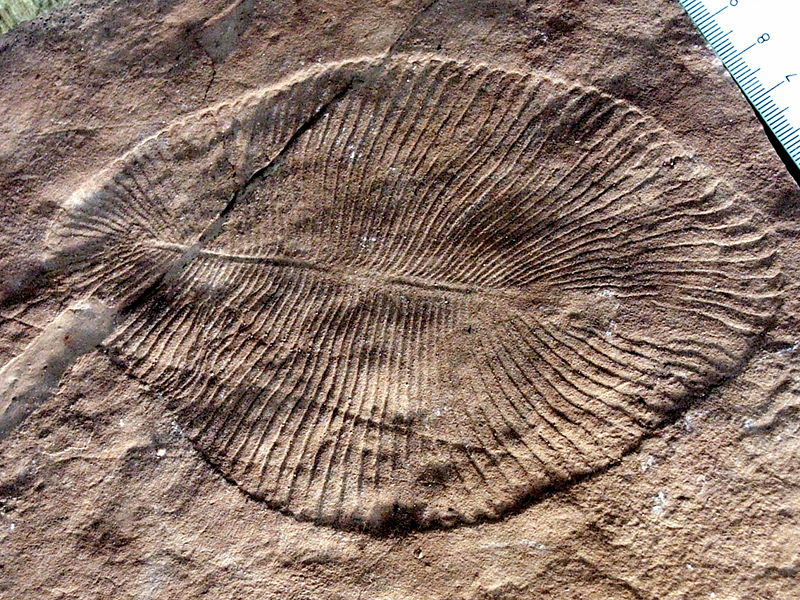
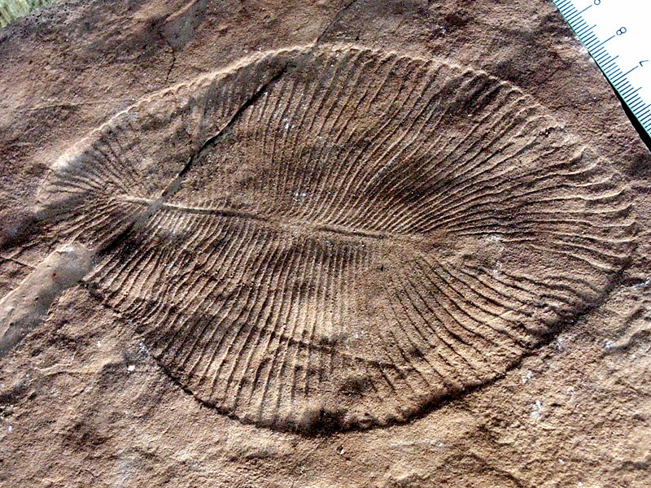

Fossils and Body Forms
Main Fossil Forms
Ediacarans emerged around 635 million years ago, and went extinct around 550 million years ago, around the beginning of the Cambrian 541 million years ago. The Ediacaran Period lasts 94 million years, from the end of the Cryogenian to the beginning of the Cambrian They are classified as metazoans.
The Ediacaran biota include the oldest specialized multicellular organisms
Some Ediacarans were were probably ancient ancestors of sponges, jellyfish, sea urchins, sea pens, shrimp, lobsters and clams. These are just the living relatives, other forms did not survive. These ancestors do not bear much resemblance to their living relatives.
The main fossil forms of the Ediacarans resembled worms, fronds, disks, or immobile bags. The Ediacaran fossils found at the Mistaken Point Formation bear mostly spindle, frond, or radiating bush-like forms.
Following his discovery, Misra grouped the Mistaken Point Ediacarans into five groups:
- Spindle
- Leaf
- Round lobate
- Dentrite-like
- Radiating
Example Organisms by Type and their Fossils
Ediacaran biota is made up of over 100 genera, and take various forms. "Ediacaran" refers to the temporal range (Ediacaran Period, 565-541Ma).
First fossil found at Mistaken Point was the Fractofusus misrai, named after its discovering scientist, S. B. Misra.
- Spindled-shaped organism
- Asexual reproduction
- Soft parts preserved remarkably, found on the surfaces of mudstones
Fractofusus misrai
- Kingdom: Animalia. Order: Rangeomorpha. Genus: Fractofusus. Species: Many
- Example of the spindle-type Ediacaran body form described by Misra
- Thought to have had asexual reproductive system involving the ejection and subsequent spreading of a waterborne progagule
The Fractofusus misrai
Charniodiscus
- Kingdom: Animalia. Genus: Charniodiscus. Species: Many
- Example of the frond/leaf-type Ediacaran body form described by Misra
- Body made up of a holdfast, a stalk, and a frond
- First discovered in England by Trevor D. Ford in 1958, prior to Misra's Newfoundland discovery
The Charniodiscus
Bradgatia
- Kingdom: insertae sedis (undefined or ambiguous). Genus: Bradgatia. Species: linfordensis
- Example of the bush-type radiating Ediacaran body type described by Misra
- Consisted of six or more fronds radiating outward from a central anchor
- Slightly resembled modern cabbage
The Bradgatia
Thectardis
- Kingdom: Animalia. Genus: Thectardis. Species: avalonensis
- Example of the cone/spindle Ediacaran body type described by Misra
- The fossils form a triangle with a central depression, suggesting the original organism was conic in shape prior to deposition
- Exhibited a fairly constant diameter-to-height ratio of about 1:3 in younger beds, increasing slightly in older beds to around 1:2.5
- Thought to have once "stood" on its tip on Ediacaran microbial sea mats, having latched on after being transported there by the stronger tides of the period (see moon note below)
- 205 specimens known at in Newfoundland alone

The Thectardis
Other Ediacarans
Arkarua
- Disk-like formed organisms of the Ediacaran biota
- Found only in Australia, not at Mistaken Point
- Ediacarans initially discovered in Australia (named after Ediacara Hills)
The Arkarua
Charnia
- Frond-like Ediacaran organism
- Discovered in England, earliest known Precambrian fossil

The Charnia
Dickinsonia
- Preserved as negative impressions at base of sandstone bed
- Bilaterlally-symmetric ovals
- First discovered with the other Australian Ediacarans, later in Ukraine, Russia, not in Mistaken Point
 

The Dickinsonia
Paleoecology considerations
During this period of time, the moon was closer to the Earth, resulting in faster, stronger tides and shorter Earth days (due to shorter lunar months from tighter orbit). This means there was increased tidal activity at this time, facilitating the development of life along coastlines and in shallow tides.
Why were these the first fossils of life found on Earth? Were the Ediacarans Earth's first life?
Life existed prior to the Ediacarans, however it did not preserve in conditions sufficient for modern preservation. For the majority of earlier organisms, they did not preserve simply because they were too small – simply Earth's earliest single-celled organisms.
The Ediacaran biota represents one of the earliest to have been found preserved to such a degree. Perhaps in the future we will develop the means to discover even smaller and older fragments of fossilized life on Earth.
References:
Misra, S.B. (November 1969). "Late Precambrian(?) fossils from southeastern Newfoundland". Geological Society of America Bulletin. 80 (11): 2133–2140. doi:10.1130/0016-7606(1969)80[2133:LPFFSN]2.0.CO;2
Misra, S.B. (April 1971). "Stratigraphy and Depositional History of Late Precambrian Coelenterate-Bearing Rocks, Southeastern Newfoundland". Geological Society of America Bulletin. 82 (4): 979–988. doi:10.1130/0016-7606(1971)82[979:SADHOL]2.0.CO;2
Misra, S.B. (August 1981). "Depositional Environment of the Late Precambrian Fossil-Bearing rocks of Southeastern Newfoundland, Canada". Journal of Geological Society of India. 22 (8)
Gehling, James G (2007). "Spindle-shaped Ediacara fossils from the Mistaken Point assemblage, Avalon Zone, Newfoundland". Canadian Journal of Earth Sciences. 44 (3): 367–387. doi:10.1139/e07-003
Glaessner, M. F., and Daily, B. (1959) "The Geology and Late Precambrian Fauna of the Ediacara Fossil Reserve"
Matthew E. Clapham; Guy M. Narbonne; Gehling, James G. (2003). "Paleoecology of the Oldest Known Animal Communities: Ediacaran Assemblages at Mistaken Point, Newfoundland". Paleobiology. 29 (4): 527–544. doi:10.1666/0094-8373(2003)029<0527:POTOKA>2.0.CO;2
Clapham, Matthew E.; Narbonne, Guy M.; Gehling, James G.; Greentree, Carolyn; Anderson, Michael M. (2004). "Thectardis avalonensis: A New Ediacaran Fossil from the Mistaken Point Biota, Newfoundland". Journal of Paleontology. 78 (6): 1031–1036. doi:10.1666/0022-3360(2004)078<1031:TAANEF>2.0.CO;2.
https://nai.nasa.gov/annual-reports/2009/mit/paleoecology-of-the-mistaken-point-biota/